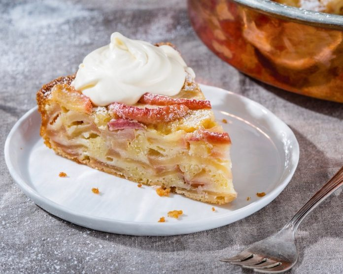

AppleCake
|

|
- AppleCakeingredients:
-
- 1/2
cup butter, softened
- 1cup sugar
- 2 eggs
- 1/4teaspoon vanilla
- 1 1/4 cups all-purpose flour
- 1 teaspoon baking soda
- 1 teaspoon ground cinnamon
- 1/4teaspoon salt
- 1 1/2 cups shredded peeled apples (about 2 medium apples)
- 1/2 cup chopped walnuts
- 1quart vanilla or cinnamon ice cream
|
How to Prepare the applecake has given below:
-
À la mode: a fancy phrase that means serving with a generous scoop of ice cream. Even fancier? Whip up some heavy cream,
flavored with a splash of caramel coffee syrup and a dash of cinnamon.
-
The best baking apples are slightly tart, hold their shape during the cooking process and aren’t too juicy.
Top choices are Granny Smith, Braeburn, Cortland, Northern Spy and Rome Beauty.
- Spread a smear of peanut or almond butter on a slice of this moist cake for an on-the-go breakfast.
- This cake is also delicious cooled and dusted with powdered sugar.
- For more apple bite, chop the apples into small chunks rather than shredding them.
Nutrition:
90 Calories, 25g Total Fat, 7g Protein, 60g Total Carbohydrate, 39g Sugars